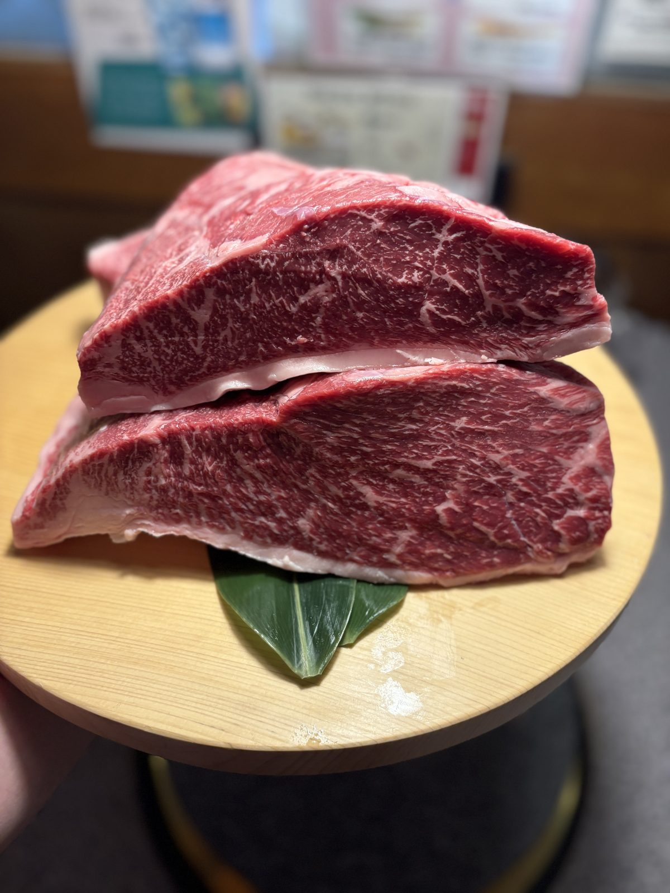
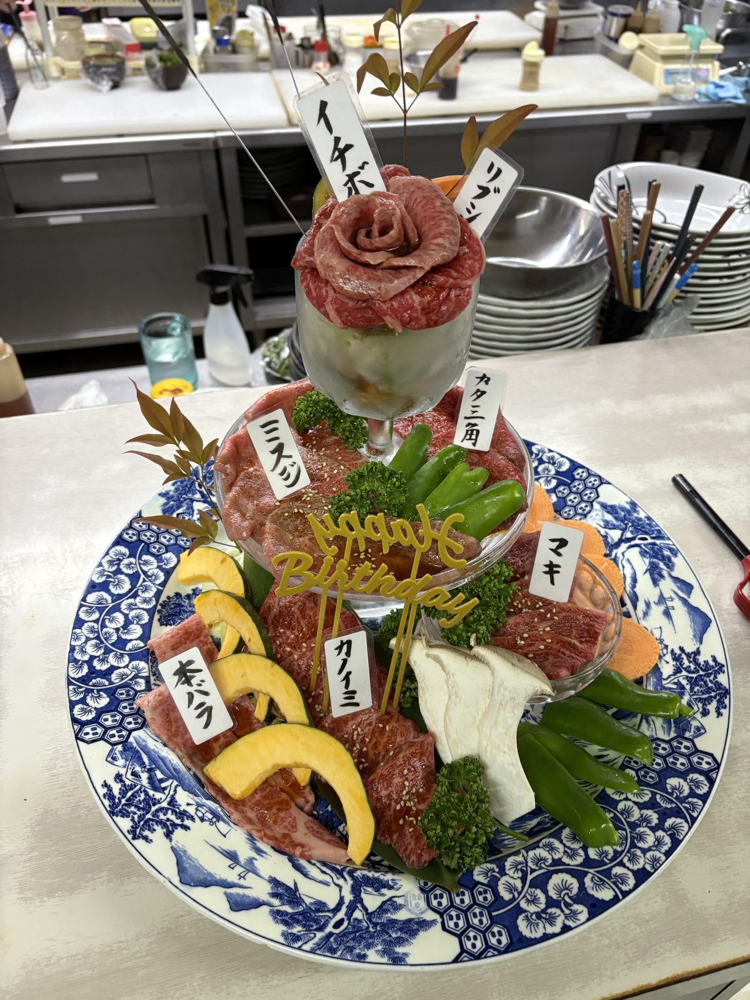
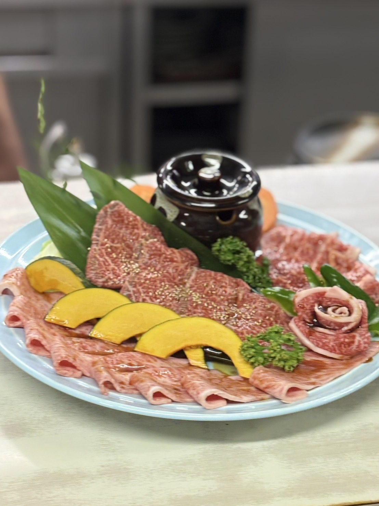
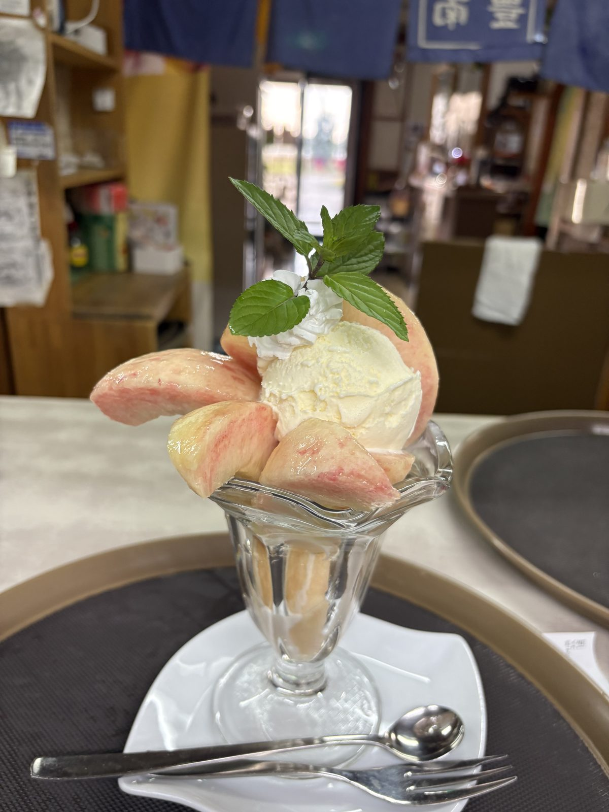
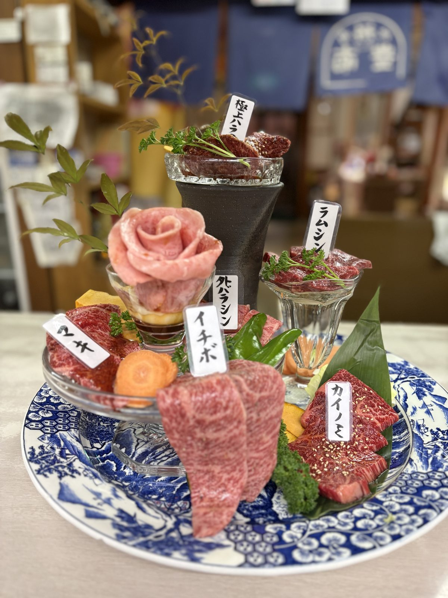
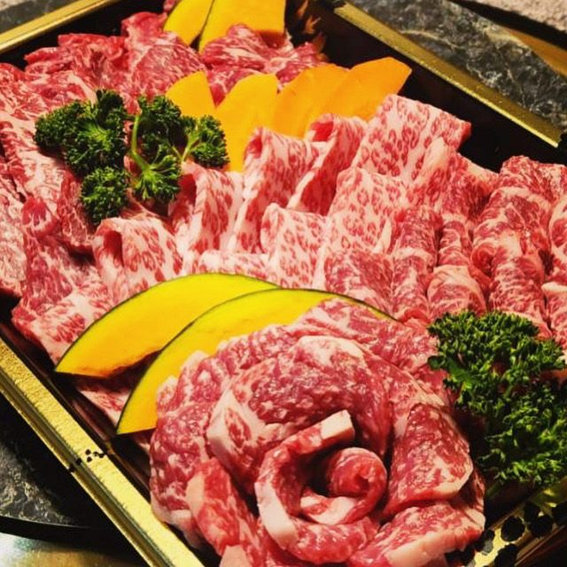

Signature
大将イチオシの名物
豊南に来店いただいたお客様に、自信をもってオススメできる4品です。希少な部位や入手が難しい部位もありますので、欠品の場合はご容赦ください。

数量限定柔らか上タン
¥1,760／1人前タン元から切り出すシルキーなタン。タン好きに是非お勧めしたい一品です。
赤身肉シリーズ
¥1,100〜／1人前お手頃なお値段から通好みの旨み濃厚最上級部位まで。豊南は赤身肉にも拘ってご用意しています。
特にうまいカルビ
¥2,750〜／1人前柔らかく独特の食感が癖になる。霜降り過ぎない丁度いいサシ感の極上カルビです。
極上和牛ハラミ
¥3,058／1人前唯一無二の食感と風味。厳選仕入れのため品切れ御免でお願いします。
旬のフルーツパフェ
その時期にいちばん美味しい果物を、丸ごと使って組み立てます。焼肉のあとのこれを目当てに来られる方もいらっしゃいます。内容と価格は時期によって変わりますので、スタッフにお尋ねください。

桃パフェ
まるごとの白桃とバニラアイス。夏のあいだだけのお楽しみです。

パインパフェ
甘みの乗ったパイナップルで。さっぱりと締めたいときに。
Course — 予約限定
豊南のコースメニュー
コースでご注文いただくと、通常オーダーよりスムーズにお料理をお出しできます。単品よりも量・質ともにおまけさせていただきます。内容は入荷によりおまかせです。
並＝JACK盛、上豊南王道＝QUEEN盛、特上贅沢三昧＝KING盛、極上＝JOKER盛。 コースは、その肉盛りにタン・キムチ・サラダ・ごはん・デザートなどが付いた形になります。 差額はおよそ 1,100円（極上は550円）。お肉だけで十分な方は盛り合わせを、 前菜からデザートまで通してお出ししてほしい方はコースをお選びください。
- 2名様以上から、お席の人数分で承ります
- 中学生未満のお子様はコース注文不要です
- 前営業日までのご予約となります（変更も前営業日まで）
course.jpg

並お手頃コース
¥4,400／お一人さまキムチ、漬け物、サラダ、タン、牛肉盛り、鶏肉、豚肉、ホルモン、ごはんと味噌汁orお茶漬け、デザート
肉盛りは JACK盛（¥3,300）と同じものです。

上豊南王道コース
¥6,050／お一人さまキムチ、漬け物、サラダ、上タン、上牛肉盛り、鶏肉、豚肉、ホルモン、ごはんと味噌汁orお茶漬け、デザート
肉盛りは QUEEN盛（¥4,950）と同じものです。

特上贅沢三昧コース
¥7,700／お一人さまキムチ、漬け物、サラダ、特上タン、特上和牛肉盛り、ホルモン、ごはんと味噌汁orお茶漬け、デザート
肉盛りは KING盛（¥6,600）と同じものです。

極上コース
¥9,350〜／お一人さまキムチ、ナムル、サラダ、特上タン、極上和牛肉盛り、ホルモン、ごはんと味噌汁orお茶漬け、デザート
肉盛りは JOKER盛（¥8,800〜）と同じものです。使用する部位等、お客様の好みに応じて対応させていただきます。ご相談ください。ただし、常にすべての部位を揃えているわけではありませんので、その日の入荷によってはご希望に添えない場合があります。
しゃぶしゃぶコース
¥4,950〜／お一人さま漬け物、サーロインしゃぶ肉盛り一人前150g、豚ロースしゃぶ肉一人前100g、しゃぶ野菜（白菜、しいたけ、ニラ、豆腐、えのき、人参、水菜、ネギ、しらたき）、ごはんと味噌汁orお茶漬け、デザート
使用するお肉によりお値段が変わります。
もつ鍋コース
¥3,300／お一人さま漬け物、キムチ、ナムル、和牛ホルモン一人前200g、鍋野菜（ニラ、キャベツ、豆腐）、ごはんと味噌汁orお茶漬け、デザート
ラストオーダーは90分でとなります。内容は飲み放題メニューをご覧ください。
Assortment — 予約限定
豊南の牛肉盛り合わせ
盛り合わせでご注文いただくと、通常オーダーよりスムーズにお肉をお出しできます。単品よりも量・質ともにおまけさせていただきます。内容は入荷によりおまかせです。
下の写真はいずれも一例です。その日の仕入れによって部位も盛り付けも変わります。
- 2名様以上から、お席の人数分で承ります
- 中学生未満のお子様は注文不要です
- 前営業日までのご予約となります（変更も前営業日まで）
まずはこちらから
¥3,300／お一人さま国産牛を中心におまかせでお値打ちにダイナミックに盛り付けます。
QUEEN — クイーン／約180g
和牛と国産牛の食べ比べ
¥4,950／お一人さま和牛と国産牛の部位を中心に盛り付けます。牛の違いと部位の違い、両方を食べ比べできるプチ贅沢な盛り合わせです。
黒毛和牛の上部位だけ
¥6,600／お一人さま黒毛和牛の上部位しか使わない盛り合わせです。入荷によって部位はおまかせになりますが、赤身も霜降りも堪能していただけるよう盛り付けます。
大将と相談して決める一皿
¥8,800〜／お一人さまワイルドに美味しいブランド和牛の盛り合わせです。お客様の好みを伺いつつ、仕入れでその時の最高の部位を提案します。
部位は常にすべてを揃えているわけではありません。ご希望が入荷していない場合は、近い持ち味の部位をご提案します。
ご注文の際は大将のお電話が長くなりがちですので、お時間に余裕をもってご連絡ください。
Dinner
ディナー単品17:00 – 22:00（L.O. 21:30）
牛タン
まずは定番のこちら。柔らかく味のある上タンは段違いに美味いです。
和牛カルビ
タレ焼肉の王道。旨みが凝縮されたような部位です。上物になるほど柔らかな肉質になります。
牛ハラミ
旨み濃厚な唯一無二の風味を持つ超人気部位。極上ハラミは厳選した希少な和牛を使います。
牛赤身
脂身少なく、いま人気の部位。ミディアムレアが最高です。焼きすぎにご注意ください。
牛ロース
柔らかく、食べやすい。焼肉の定番メニューです。
つぼ漬け
厚切りのお肉を秘伝のタレでよく揉みこんであります。タレ好きのための一品です。
豚肉（愛知県産）
愛知県産の豚の中でも、餌と肥育に拘った厳選豚を使います。ネギとも相性抜群です。
鶏肉
ホルモン
昔ながらのホルモン焼きメニュー。豊田の加工場から直入荷の豚ホルモンと、近江牛の豊南こだわりホルモンです。厳選入荷のため数量限定でお願いします。
海鮮
焼肉の名脇役。美味しい海の幸もご用意しています。
ウィンナー
キムチ・ナムル
一品
お酒、食事のお供に。焼肉屋のおつまみです。
サラダ・野菜
お肉の前に、お肉と一緒に、箸休めに。
スープ
野菜の優しい甘みと牛骨の旨み。豊南のスープは牛骨と野菜の出汁がベースです。みそ汁はムロ節からだしを取った昔ながら。
ごはんもの
白米は地元でとれたお米「大地の風」を使用しています。
デザート
薬味
Lunch
ランチ11:30 – 14:00（オーダーストップ 13:30）
ご予約なしでお越しいただけます。全てのメニューに漬物・サラダ・味噌汁が付きます。定食にはご飯も付いています（大盛り +¥220）。
lunch.jpg
豊南焼肉定食
豊南の定番。焼き台で焼いてもらうお値打ちな焼肉ランチです。
その他の焼肉ランチ
どんぶりもの
ランチの定食
お昼の単品
Take out
お持ち帰り
ご家庭で焼いていただける、おまかせの盛り合わせをご用意できます。ご予算をお伝えいただければ、その日の仕入れから組みます。
鳳来牛は愛知県新城市の黒毛和牛で、肥育の条件が厳しく生産数もごくわずか。薄切りでも上品に甘く、和牛香と濃厚な旨みがいちばん出るサーロインをご用意しています。ご家庭の食卓に、地元・三河が誇れる一皿を。
数に限りがありますので、お早めにご相談ください。鳳来牛のこと

Free drinks
飲み放題120分 ／ ¥2,200
10名様以上のご宴会から承ります。ラストオーダーは終了30分前（90分）です。
- 飲み残しは別途料金をいただきますので、美味しく飲み切ってください
- お時間をいただくため、ファーストドリンクは事前にオーダーをお願いします
- ビール
- キリン中瓶／ノンアルビール
- ハイボール
- 陸ハイボール／ジンジャーハイ／コークハイ
- スマート
ハイボール - スマライチ／スママンゴ／スマさんざし／スマもも
- チューハイ
- レモンハイ／ウーロンハイ
- 日本酒
- 本日の冷酒
- 焼酎
- 麦焼酎／芋焼酎（ロック、水割り）
- ワイン
- 赤ワイングラス（ボルサオ ティント クラシコ）
- 果実酒
- 加賀梅酒／柚子小町（ロック、ソーダ）
- ソフト
ドリンク - ウーロン茶／100%オレンジ／100%グレープフルーツ／炭酸水／カルピス／コーラ／ジンジャー
- プレミアム
ソフト - エルダーフラワー／大人のオレンジ／黒ウーロン
お支払いについて
- 現金
- ご利用いただけます
- カード
- VISA／Mastercard／JCB／AMEX／Diners
- 電子決済
- PayPay／iD／QUICPay
表示価格はすべて税込です。g表記はすべておおよそになります。